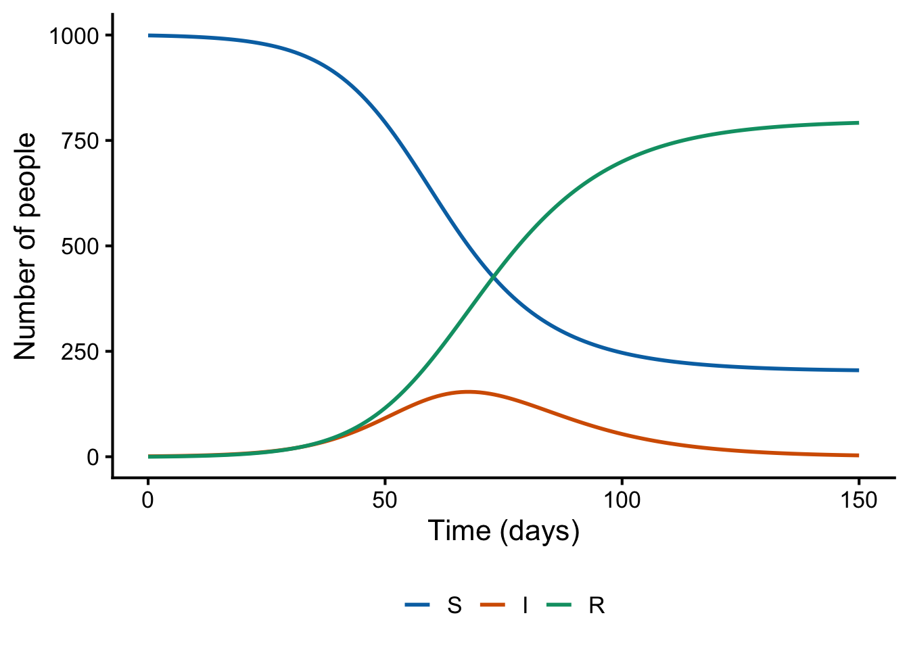
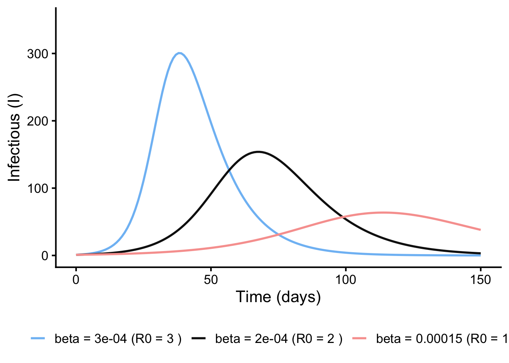
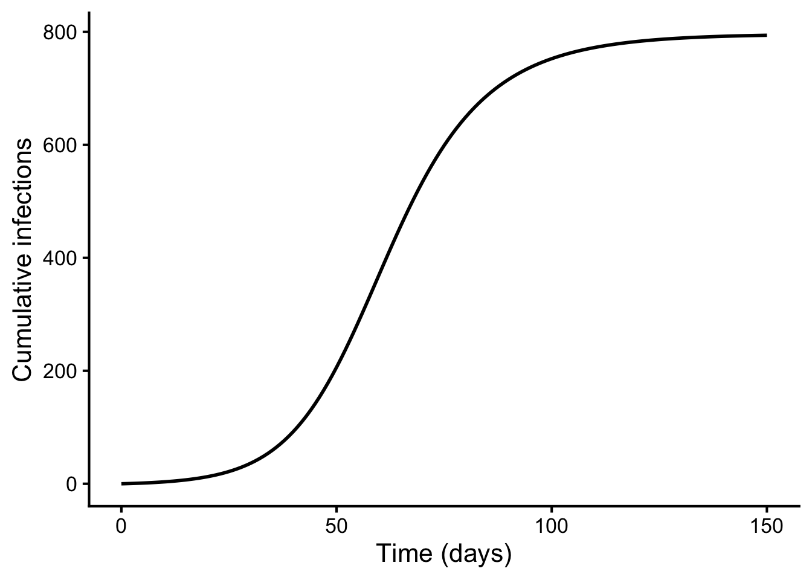
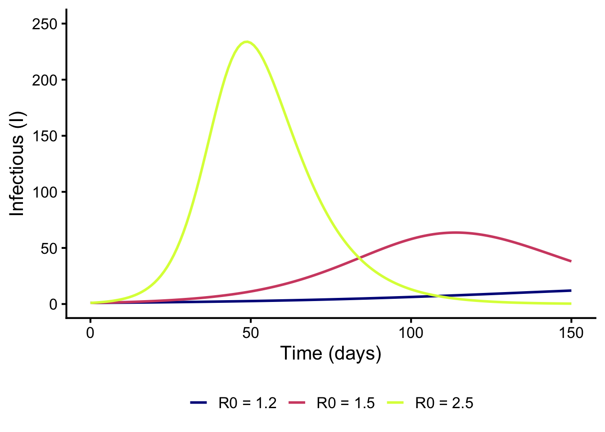
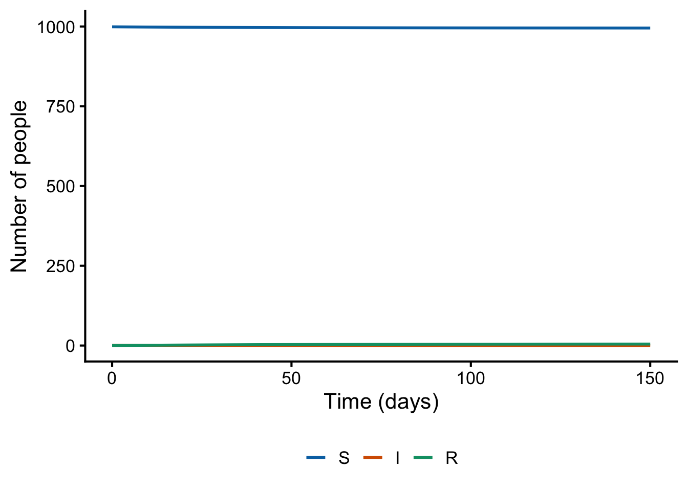

library(odin)
library(tidyverse)1 B3_1: odin basics & the SIR model
Goal: write, compile, run and plot your first compartmental model in odin.
1.1 Why odin?
A compartmental model is a set of ordinary differential equations (ODEs). R’s standard solver, deSolve, integrates these with compiled Fortran routines, so the solver itself is fast. The slow part is the model function: by default you write it in R, and the solver calls back into R at every integration step. You can avoid this by writing the model function in C (deSolve supports this), but doing it by hand is tedious and easy to get wrong.
odin does this translation for you. You write the equations in a language that looks like R; odin translates them to C, compiles them, and links them to deSolve’s solver. The model then runs at compiled speed, which matters when you fit models or run many scenarios. odin also handles the bookkeeping — packing state vectors, initial conditions, parameters and array indexing.
One thing to understand from the start: odin code is declarative. It is not executed as R code; it is parsed and compiled. You write what the equations are, not how to compute them, so the order of the lines does not matter.
1.2 The SIR model
The classic SIR model splits a population of \(N\) people into:
- \(S\) — Susceptible
- \(I\) — Infectious
- \(R\) — Recovered (removed)
with flows:
\[ \frac{dS}{dt} = -\beta SI, \qquad \frac{dI}{dt} = \beta SI - \gamma I, \qquad \frac{dR}{dt} = \gamma I \]
- \(\beta\) — transmission rate
- \(\gamma\) — recovery rate; \(1/\gamma\) is the mean infectious period
- The basic reproduction number is \(R_0 = \beta N / \gamma\)
This is the density-dependent formulation: transmission is proportional to the number of infectious people, so \(R_0\) scales with the population size \(N\) — and \(\beta\) therefore depends on the population you are modelling.
1.3 Your first odin model
An odin model has three ingredients: derivatives (deriv()), initial conditions (initial()) and parameters. In this first version we fix the parameter values directly in the code:
# verbose = TRUE so we can watch odin generate and compile the C code
sir_generator <- odin::odin({
## Derivatives: the flows between compartments
deriv(S) <- -beta * S * I
deriv(I) <- beta * S * I - gamma * I
deriv(R) <- gamma * I
## Initial conditions: where the system starts (t = 0)
initial(S) <- N0 - I0
initial(I) <- I0
initial(R) <- 0
## Parameters: fixed values
N0 <- 1000 # total population size
I0 <- 1 # initial number infectious
beta <- 2e-4 # transmission rate (R0 = beta * N / gamma = 2)
gamma <- 0.1 # recovery rate (infectious period of 10 days)
}, verbose = TRUE)Loading required namespace: pkgbuildGenerating model in cℹ Re-compiling odin09448d67 (debug build)── R CMD INSTALL ───────────────────────────────────────────────────────────────
* installing *source* package ‘odin09448d67’ ...
** this is package ‘odin09448d67’ version ‘0.0.1’
** using staged installation
** libs
using C compiler: ‘Apple clang version 21.0.0 (clang-2100.1.1.101)’
using SDK: ‘MacOSX26.5.sdk’
clang -std=gnu23 -I"/opt/homebrew/Cellar/r/4.6.1/lib/R/include" -DNDEBUG -I/opt/homebrew/opt/gettext/include -I/opt/homebrew/opt/readline/include -I/opt/homebrew/opt/xz/include -I/opt/homebrew/include -I/opt/homebrew/Cellar/harfbuzz/14.2.1/include/harfbuzz -I/opt/homebrew/opt/freetype/include/freetype2 -I/opt/homebrew/opt/libpng/include/libpng16 -I/opt/homebrew/Cellar/glib/2.88.2/include/glib-2.0 -I/opt/homebrew/Cellar/glib/2.88.2/lib/glib-2.0/include -I/opt/homebrew/opt/gettext/include -I/opt/homebrew/Cellar/pcre2/10.47_1/include -I/opt/homebrew/opt/graphite2/include -fPIC -g -O2 -UNDEBUG -Wall -pedantic -g -O0 -c odin.c -o odin.o
odin.c:100:18: warning: unused variable 'internal' [-Wunused-variable]
100 | odin_internal *internal = odin_get_internal(internal_p, 1);
| ^~~~~~~~
1 warning generated.
clang -std=gnu23 -I"/opt/homebrew/Cellar/r/4.6.1/lib/R/include" -DNDEBUG -I/opt/homebrew/opt/gettext/include -I/opt/homebrew/opt/readline/include -I/opt/homebrew/opt/xz/include -I/opt/homebrew/include -I/opt/homebrew/Cellar/harfbuzz/14.2.1/include/harfbuzz -I/opt/homebrew/opt/freetype/include/freetype2 -I/opt/homebrew/opt/libpng/include/libpng16 -I/opt/homebrew/Cellar/glib/2.88.2/include/glib-2.0 -I/opt/homebrew/Cellar/glib/2.88.2/lib/glib-2.0/include -I/opt/homebrew/opt/gettext/include -I/opt/homebrew/Cellar/pcre2/10.47_1/include -I/opt/homebrew/opt/graphite2/include -fPIC -g -O2 -UNDEBUG -Wall -pedantic -g -O0 -c registration.c -o registration.o
clang -std=gnu23 -dynamiclib -Wl,-headerpad_max_install_names -undefined dynamic_lookup -L/opt/homebrew/Cellar/r/4.6.1/lib/R/lib -L/opt/homebrew/opt/gettext/lib -L/opt/homebrew/opt/readline/lib -L/opt/homebrew/opt/xz/lib -L/opt/homebrew/lib -o odin09448d67.so odin.o registration.o -L/opt/homebrew/Cellar/harfbuzz/14.2.1/lib -lharfbuzz -L/opt/homebrew/Cellar/r/4.6.1/lib/R/lib -lR
installing to /private/var/folders/h7/2ngcws596w5922f6d7351gw80000gp/T/RtmphgEwfu/devtools_install_8876527e2dc6/00LOCK-file8876474f17af/00new/odin09448d67/libs
** checking absolute paths in shared objects and dynamic libraries
* DONE (odin09448d67)ℹ Loading odin09448d67The messages show odin generating C code from the equations and compiling it. From this point on, running the model involves no R code at all. You may also see compiler warnings (unused variable, format specifies...). These come from the C template inside the odin package itself, not from your equations — odin regenerates that file on every compile, so there is nothing in your model to correct. They are benign: the unused variable is boilerplate this small model does not need, and the format-string mismatch sits in an error-message path that only runs on invalid input. The proper place to fix them is upstream, in odin itself.
Note two things:
odin::odin({...})parsed and compiled the equations. If that line runs without error, the model is ready to use.- The result,
sir_generator, is not a model — it is a model generator: a factory that creates model instances.
Notice also what the model does not contain: N <- S + I + R. Nothing in the equations uses N — with density-dependent transmission and no births, it plays no role, so there is nothing to compute. You only need N when an equation references it: a birth term like mu * N (you will see this in B3_2), frequency-dependent transmission (beta * S * I / N), or any other per-capita rate.
1.4 Running the model
Create an instance and run it over a vector of times:
sir <- sir_generator$new()
times <- seq(0, 150, by = 1) # daily output over 150 days
out <- sir$run(times)
head(out) t S I R
[1,] 0 999.0000 1.000000 0.0000000
[2,] 1 998.7899 1.104927 0.1051592
[3,] 2 998.5578 1.220810 0.2213507
[4,] 3 998.3015 1.348781 0.3497250
[5,] 4 998.0184 1.490086 0.4915513
[6,] 5 997.7057 1.646096 0.6482319out is a data frame with one column per compartment plus time t, and one row per requested time point. Plot it with ggplot2:
as.data.frame(out) |>
pivot_longer(c(S, I, R), names_to = "compartment", values_to = "n") |>
mutate(compartment = factor(compartment, levels = c("S", "I", "R"))) |>
ggplot(aes(t, n, colour = compartment)) +
geom_line(linewidth = 1) +
scale_colour_manual(values = c(S = "#0072B2", I = "#D55E00", R = "#009E73")) +
labs(x = "Time (days)", y = "Number of people", colour = NULL) +
theme_classic(base_size = 16) +
theme(legend.position = "bottom")
1.5 Making parameters changeable: user()
This model works, but the parameters are fixed in the compiled C code. To try a different beta you would have to edit the model definition and recompile, which gets awkward when you want to compare several scenarios.
user() solves this. Declaring a parameter with user(default) makes it settable when the model instance is created, with the default used when you don’t set it. Only the parameter block changes:
sir_generator <- odin::odin({
deriv(S) <- -beta * S * I
deriv(I) <- beta * S * I - gamma * I
deriv(R) <- gamma * I
initial(S) <- N0 - I0
initial(I) <- I0
initial(R) <- 0
N0 <- user(1000) # can now be changed at $new() time
I0 <- user(1)
beta <- user(2e-4)
gamma <- user(0.1)
})── R CMD INSTALL ───────────────────────────────────────────────────────────────
* installing *source* package ‘odinf105cdaf’ ...
** this is package ‘odinf105cdaf’ version ‘0.0.1’
** using staged installation
** libs
using C compiler: ‘Apple clang version 21.0.0 (clang-2100.1.1.101)’
using SDK: ‘MacOSX26.5.sdk’
clang -std=gnu23 -I"/opt/homebrew/Cellar/r/4.6.1/lib/R/include" -DNDEBUG -I/opt/homebrew/opt/gettext/include -I/opt/homebrew/opt/readline/include -I/opt/homebrew/opt/xz/include -I/opt/homebrew/include -I/opt/homebrew/Cellar/harfbuzz/14.2.1/include/harfbuzz -I/opt/homebrew/opt/freetype/include/freetype2 -I/opt/homebrew/opt/libpng/include/libpng16 -I/opt/homebrew/Cellar/glib/2.88.2/include/glib-2.0 -I/opt/homebrew/Cellar/glib/2.88.2/lib/glib-2.0/include -I/opt/homebrew/opt/gettext/include -I/opt/homebrew/Cellar/pcre2/10.47_1/include -I/opt/homebrew/opt/graphite2/include -fPIC -g -O2 -UNDEBUG -Wall -pedantic -g -O0 -c odin.c -o odin.o
odin.c:116:18: warning: unused variable 'internal' [-Wunused-variable]
116 | odin_internal *internal = odin_get_internal(internal_p, 1);
| ^~~~~~~~
odin.c:199:52: warning: format specifies type 'int' but the argument has type 'const char *' [-Wformat]
199 | Rf_error("Expected scalar integer for '%d'", name);
| ~~ ^~~~
| %s
2 warnings generated.
clang -std=gnu23 -I"/opt/homebrew/Cellar/r/4.6.1/lib/R/include" -DNDEBUG -I/opt/homebrew/opt/gettext/include -I/opt/homebrew/opt/readline/include -I/opt/homebrew/opt/xz/include -I/opt/homebrew/include -I/opt/homebrew/Cellar/harfbuzz/14.2.1/include/harfbuzz -I/opt/homebrew/opt/freetype/include/freetype2 -I/opt/homebrew/opt/libpng/include/libpng16 -I/opt/homebrew/Cellar/glib/2.88.2/include/glib-2.0 -I/opt/homebrew/Cellar/glib/2.88.2/lib/glib-2.0/include -I/opt/homebrew/opt/gettext/include -I/opt/homebrew/Cellar/pcre2/10.47_1/include -I/opt/homebrew/opt/graphite2/include -fPIC -g -O2 -UNDEBUG -Wall -pedantic -g -O0 -c registration.c -o registration.o
clang -std=gnu23 -dynamiclib -Wl,-headerpad_max_install_names -undefined dynamic_lookup -L/opt/homebrew/Cellar/r/4.6.1/lib/R/lib -L/opt/homebrew/opt/gettext/lib -L/opt/homebrew/opt/readline/lib -L/opt/homebrew/opt/xz/lib -L/opt/homebrew/lib -o odinf105cdaf.so odin.o registration.o -L/opt/homebrew/Cellar/harfbuzz/14.2.1/lib -lharfbuzz -L/opt/homebrew/Cellar/r/4.6.1/lib/R/lib -lR
installing to /private/var/folders/h7/2ngcws596w5922f6d7351gw80000gp/T/RtmphgEwfu/devtools_install_88767254a6ad/00LOCK-file887645d4fc9c/00new/odinf105cdaf/libs
** checking absolute paths in shared objects and dynamic libraries
* DONE (odinf105cdaf)sir_generator$new()uses all the defaults.sir_generator$new(beta = 3e-4)overrides justbeta, without recompiling — the compiled C code is reused.mod$contents()shows the parameter values an instance is using.
1.6 Changing parameters: scenarios from one compiled model
Scenarios are now cheap — pass new parameter values to $new():
beta_values <- c(3e-4, 2e-4, 1.5e-4)
scenario_labels <- paste("beta =", beta_values,
"(R0 =", beta_values * 1000 / 0.1, ")")
map_dfr(beta_values, function(beta_i) { # one run per beta value
mod <- sir_generator$new(beta = beta_i)
data.frame(t = times, I = mod$run(times)[, "I"], beta = beta_i)
}) |>
mutate(beta = factor(beta, levels = beta_values, labels = scenario_labels)) |>
ggplot(aes(t, I, colour = beta)) +
geom_line(linewidth = 1) +
scale_colour_manual(values = hcl.colors(length(beta_values), "Berlin")) +
coord_cartesian(ylim = c(0, 350)) +
labs(x = "Time (days)", y = "Infectious (I)", colour = NULL) +
theme_classic(base_size = 16) +
theme(legend.position = "bottom")
Compilation happens once; every scenario after that is just $new() and $run().
1.7 Tracking extra quantities: cumulative incidence
Sometimes you want a quantity that is not a compartment — for example the total number of infections so far. Add another derivative that accumulates it:
sir_inc <- odin::odin({
deriv(S) <- -beta * S * I
deriv(I) <- beta * S * I - gamma * I
deriv(R) <- gamma * I
deriv(cum_inc) <- beta * S * I # accumulates new infections
initial(S) <- N0 - I0
initial(I) <- I0
initial(R) <- 0
initial(cum_inc) <- 0
N0 <- user(1000)
I0 <- user(1)
beta <- user(2e-4)
gamma <- user(0.1)
})── R CMD INSTALL ───────────────────────────────────────────────────────────────
* installing *source* package ‘odin41f2e85e’ ...
** this is package ‘odin41f2e85e’ version ‘0.0.1’
** using staged installation
** libs
using C compiler: ‘Apple clang version 21.0.0 (clang-2100.1.1.101)’
using SDK: ‘MacOSX26.5.sdk’
clang -std=gnu23 -I"/opt/homebrew/Cellar/r/4.6.1/lib/R/include" -DNDEBUG -I/opt/homebrew/opt/gettext/include -I/opt/homebrew/opt/readline/include -I/opt/homebrew/opt/xz/include -I/opt/homebrew/include -I/opt/homebrew/Cellar/harfbuzz/14.2.1/include/harfbuzz -I/opt/homebrew/opt/freetype/include/freetype2 -I/opt/homebrew/opt/libpng/include/libpng16 -I/opt/homebrew/Cellar/glib/2.88.2/include/glib-2.0 -I/opt/homebrew/Cellar/glib/2.88.2/lib/glib-2.0/include -I/opt/homebrew/opt/gettext/include -I/opt/homebrew/Cellar/pcre2/10.47_1/include -I/opt/homebrew/opt/graphite2/include -fPIC -g -O2 -UNDEBUG -Wall -pedantic -g -O0 -c odin.c -o odin.o
odin.c:120:18: warning: unused variable 'internal' [-Wunused-variable]
120 | odin_internal *internal = odin_get_internal(internal_p, 1);
| ^~~~~~~~
odin.c:207:52: warning: format specifies type 'int' but the argument has type 'const char *' [-Wformat]
207 | Rf_error("Expected scalar integer for '%d'", name);
| ~~ ^~~~
| %s
2 warnings generated.
clang -std=gnu23 -I"/opt/homebrew/Cellar/r/4.6.1/lib/R/include" -DNDEBUG -I/opt/homebrew/opt/gettext/include -I/opt/homebrew/opt/readline/include -I/opt/homebrew/opt/xz/include -I/opt/homebrew/include -I/opt/homebrew/Cellar/harfbuzz/14.2.1/include/harfbuzz -I/opt/homebrew/opt/freetype/include/freetype2 -I/opt/homebrew/opt/libpng/include/libpng16 -I/opt/homebrew/Cellar/glib/2.88.2/include/glib-2.0 -I/opt/homebrew/Cellar/glib/2.88.2/lib/glib-2.0/include -I/opt/homebrew/opt/gettext/include -I/opt/homebrew/Cellar/pcre2/10.47_1/include -I/opt/homebrew/opt/graphite2/include -fPIC -g -O2 -UNDEBUG -Wall -pedantic -g -O0 -c registration.c -o registration.o
clang -std=gnu23 -dynamiclib -Wl,-headerpad_max_install_names -undefined dynamic_lookup -L/opt/homebrew/Cellar/r/4.6.1/lib/R/lib -L/opt/homebrew/opt/gettext/lib -L/opt/homebrew/opt/readline/lib -L/opt/homebrew/opt/xz/lib -L/opt/homebrew/lib -o odin41f2e85e.so odin.o registration.o -L/opt/homebrew/Cellar/harfbuzz/14.2.1/lib -lharfbuzz -L/opt/homebrew/Cellar/r/4.6.1/lib/R/lib -lR
installing to /private/var/folders/h7/2ngcws596w5922f6d7351gw80000gp/T/RtmphgEwfu/devtools_install_88761a9f8ef3/00LOCK-file88767dd8cb6/00new/odin41f2e85e/libs
** checking absolute paths in shared objects and dynamic libraries
* DONE (odin41f2e85e)out <- sir_inc$new()$run(times)as.data.frame(out) |>
ggplot(aes(t, cum_inc)) +
geom_line(linewidth = 1) +
labs(x = "Time (days)", y = "Cumulative infections") +
theme_classic(base_size = 16)
The final value of cum_inc (≈ 794 out of 1000) is the final size of the epidemic: about 80% of the population. The epidemic dies out before everyone is infected because once prevalence is high, each infectious person infects fewer than one susceptible on average.
Exercise 1.1 — What does \(R_0\) control?
Using sir_generator, run the model with beta chosen so that \(R_0\) is 1.2, 1.5 and 2.5 (keep gamma = 0.1; remember \(R_0 = \beta N / \gamma\)). Plot the three I curves on one plot. What happens to the peak height and peak timing as \(R_0\) increases?
Show solution
R0_targets <- c(1.2, 1.5, 2.5)
map_dfr(R0_targets, function(R0_i) {
beta_i <- R0_i * 0.1 / 1000 # R0 = beta * N / gamma
data.frame(t = times, I = sir_generator$new(beta = beta_i)$run(times)[, "I"],
R0 = R0_i)
}) |>
mutate(R0 = factor(paste("R0 =", R0), levels = paste("R0 =", R0_targets))) |>
ggplot(aes(t, I, colour = R0)) +
geom_line(linewidth = 1) +
scale_colour_manual(values = hcl.colors(length(R0_targets), "Plasma")) +
coord_cartesian(ylim = c(0, 250)) +
labs(x = "Time (days)", y = "Infectious (I)", colour = NULL) +
theme_classic(base_size = 16) +
theme(legend.position = "bottom")
Higher \(R_0\) gives an earlier, higher, sharper peak; close to the threshold \(R_0 = 1\) the epidemic is slow and shallow.
Exercise 1.2 — Threshold behaviour
Set beta = 8e-5 (so \(R_0 = \beta N / \gamma = 0.8 < 1\)) and run the model. What happens, and why does no epidemic occur?
Show solution
out <- sir_generator$new(beta = 8e-5)$run(times)
as.data.frame(out) |>
pivot_longer(c(S, I, R), names_to = "compartment", values_to = "n") |>
mutate(compartment = factor(compartment, levels = c("S", "I", "R"))) |>
ggplot(aes(t, n, colour = compartment)) +
geom_line(linewidth = 1) +
scale_colour_manual(values = c(S = "#0072B2", I = "#D55E00", R = "#009E73")) +
labs(x = "Time (days)", y = "Number of people", colour = NULL) +
theme_classic(base_size = 16) +
theme(legend.position = "bottom")
When \(R_0 < 1\) each infectious person infects fewer than one other on average, so prevalence decays immediately — I never grows.
1.8 Recap
- odin models are equations, not code:
deriv(),initial(), parameters odin::odin({...})compiles the equations to C and returns a generatorgenerator$new()creates an instance;$run(t)integrates ituser(default)makes a parameter settable at$new()— one compilation, unlimited scenarios- Add a
deriv()line for derived quantities like cumulative incidence
Next: Chapter 2 — latent periods, births and deaths, and parameters that change over time.